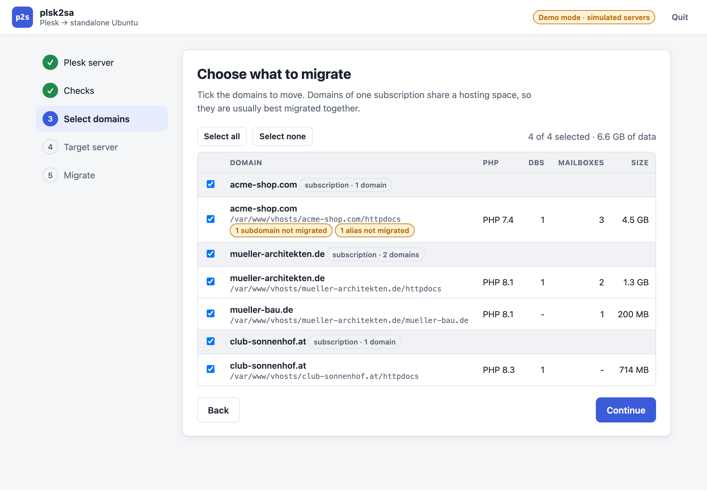
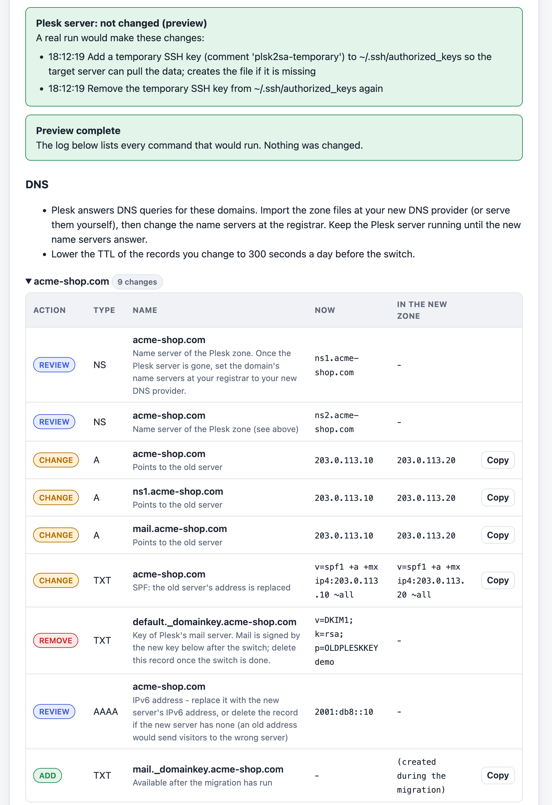

Zieht Domains mit Web, Mail und Datenbanken von einem Plesk-Server auf einen eigenen Ubuntu-Server – ohne Panel. Ein Assistent führt durch Verbinden, Prüfen, Auswahl und Umzug; DNS-Änderungen werden gleich mitgeliefert.

Die Vorschau listet jeden Befehl, der laufen würde, und ändert nichts – weder am Ziel noch am Plesk-Server.
Vorher, während des Laufs und danach: Das Programm zeigt jede Änderung am Quellserver an und ob sie wieder entfernt wurde.
Dateien und Postfächer laufen per rsync vom Plesk-Server direkt zum Ziel, nicht über deinen Rechner. Der dafür nötige SSH-Schlüssel ist temporär und wird am Ende entfernt.
Liegt das DNS woanders, zeigt es genau, welche Einträge sich ändern. Hostet Plesk das DNS, gibt es fertige Zonendateien zum Importieren.
Postfächer ziehen mit ihren Passwörtern um (Dovecot), inklusive Aliasen, Maildirs und neuem DKIM-Schlüssel.
nginx und PHP-FPM mit eigenem Pool pro Domain, MariaDB mit Dump und Restore, Zertifikate danach per certbot.
Der ganze Assistent lässt sich mit simulierten Servern durchklicken – ohne dass irgendetwas verbunden oder geändert wird.
Dieselbe Engine läuft ohne Oberfläche, mit Trockenlauf, Checks und DNS-Plan.

Bitte zuerst die Vorschau laufen lassen. Das Programm ist durch Tests mit simulierten Servern abgesichert, aber noch nicht an einer echten Plesk-Installation erprobt. Verbinden, Prüfungen und Vorschau ändern nichts.
~/.ssh/authorized_keys ein und entfernt ihn am Ende wieder – auch nach Fehlern oder Abbruch. Sonst wird dort nichts verändert oder gelöscht.